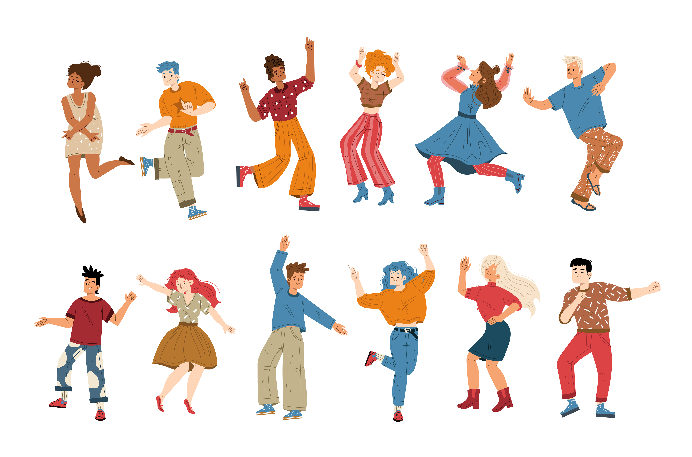

¡A cantar, bailar, tocar y grabar!
- Duración:
- 3 h 30´
- Agrupamiento:
- Pequeño grupo/ grupo clase
Ahora que sois expertos/as en vuestro género debéis seleccionar una canción y proponer alguna actividad musical para realizar con el resto de compañeros. La diseñaréis y practicaréis en grupo y mas tarde la interpretaremos toda la clase. La pequeña actuación será grabada en vídeo para añadir al portfolio de cada grupo. Podéis usar cualquier herramienta que consideréis (stop motion, croma...)
Aquí tenéis algunas ideas de actividades. Recordad que internet es fuente de recursos. Podémos encontrar actividades inspiradoras, partituras, etc.
Interpretación vocal
Percusión corporal

Interpretación instrumental
También podemos usar nuestros instrumentos preferidos o cotidiáfonos y acompañar la canción elegida. ¿Sois capaces de interpretar alguna melodía con carrillón, flauta, boomwhackers...?
Danza y movimiento
Por supuesto os podéis decantar por realizar alguna coreografía. Os animo a investigar cuáles son los pasos de baile más habituales en ese género. También podéis incluir cualquier elemento del que dispongamos: aros, pelotas, objetos cotidianos... ¡Sorprendednos!
Imagen de upklyak en Freepik